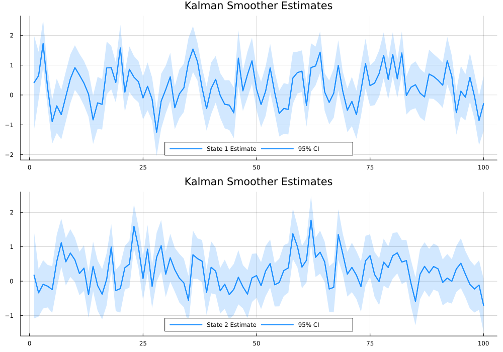
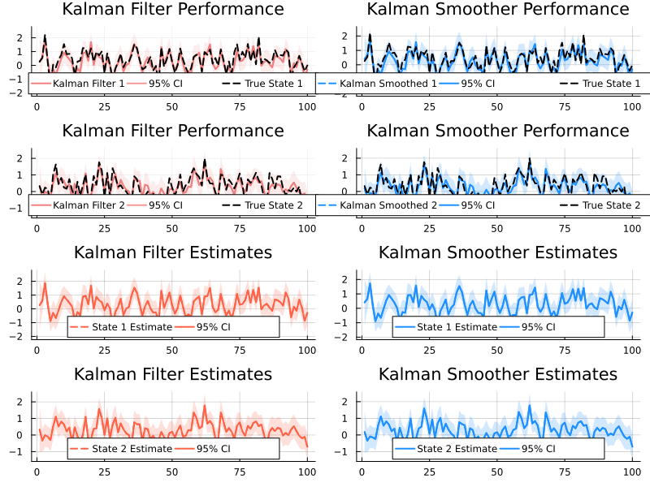

QuadraticKalman.jl End-to-End Example
Examples
This example demonstrates an end-to-end workflow using QuadraticKalman.jl. In this example we simulate state and observation data, run the Kalman filter and smoother, plot the results, and finally compute the negative log-likelihood along with its gradients.
using Pkg
Pkg.activate("..") # Activate local environment
Pkg.develop(path="../../") # Relative path to package root
Pkg.instantiate()
using QuadraticKalman
using Random, LinearAlgebra, Statistics, Plots
# Step 1: Set Parameters
N = 2 # Number of states
M = 2 # Number of measurements
T = 100 # Number of time periods to simulate
seed = 2314 # Random seed for reproducibility
Random.seed!(seed)
# Generate stable state transition parameters
Phi = [0.5 0.1; 0.1 0.3] # Autoregressive (state transition) matrix
mu = [0.1, 0.2] # State drift vector
Sigma = [0.6 0.15; 0.15 0.4] # State noise covariance matrix
Omega = cholesky(Sigma).L # Scale for state noise
# Measurement parameters
A = [0.0, 0.0] # Measurement drift vector
B = [1.0 0.0; 0.0 1.0] # Measurement matrix linking state to observation
C = [[0.2 0.1; 0.1 0.0], # Quadratic effect for first measurement
[0.0 0.1; 0.1 0.2]] # Quadratic effect for second measurement
V = [0.2 0.0; 0.0 0.2] # Measurement noise covariance matrix
D = cholesky(V).L # Scale for measurement noise
alpha = zeros(M, M) # Measurement autoregressive matrixStep 2: Simulate States
X = zeros(N, T)
X[:, 1] = (I - Phi) \ mu # Initialize state at the unconditional mean
for t in 1:(T-1)
shock = randn(N)
X[:, t+1] = mu + Phi * X[:, t] + Omega * shock
endStep 3: Simulate Observations
Y = zeros(M, T)
for t in 1:T
noise = randn(M)
xt = X[:, t]
# Linear component
Y[:, t] = A + B * xt
# Include autoregressive measurement component if t > 1
if t > 1
Y[:, t] += alpha * Y[:, t-1]
end
# Add quadratic effects for each measurement
for i in 1:M
Y[i, t] += xt' * C[i] * xt
end
# Add measurement noise
Y[:, t] += D * noise
endStep 4: Define and Initialize the Model
model = QKModel(N, M, mu, Phi, Omega, A, B, C, D, alpha)QKModel{Float64, Float64}
state: StateParams{Float64}
meas: MeasParams{Float64}
aug_state: AugStateParams{Float64, Float64}
moments: Moments{Float64}Step 5: Run the Filter and Smoother
data = QKData(Y)
results = qkf_filter(data, model)FilterOutput{Float64}(...)Step 6: Run the Smoother
results_smoother = qkf_smoother(results, model)SmootherOutput{Float64}(...)Display Log-Likelihood and Plot Results
println("Filter Log-Likelihood: ", sum(results.ll_t))
plot(kalman_filter_truth_plot(X, results))
plot(kalman_smoother_truth_plot(X, results_smoother))
plot(kalman_filter_plot(results))
plot(kalman_smoother_plot(results_smoother))Filter Log-Likelihood: -263.0625463924433
Step 7: Model-Parameter Conversion and Gradient Analysis
params = model_to_params(model)
model_from_params = params_to_model(params, N, M)
# Compute negative log-likelihood function for automatic differentiation
nll(params) = qkf_negloglik(params, data, N, M)
using ForwardDiff, FiniteDiff
grad = ForwardDiff.gradient(nll, params)
grad_fd = FiniteDiff.finite_difference_gradient(nll, params)
println("Max absolute difference in gradients: ", maximum(abs.(grad - grad_fd)))
println("Hessian condition number: ", cond(ForwardDiff.hessian(nll, params)))Max absolute difference in gradients: 0.019281279928234474
Hessian condition number: 5.8961011704491535e6Display Plots Properly
p1 = plot(kalman_filter_truth_plot(X, results))
p2 = plot(kalman_smoother_truth_plot(X, results_smoother))
p3 = plot(kalman_filter_plot(results))
p4 = plot(kalman_smoother_plot(results_smoother))
plot(p1, p2, p3, p4, layout=(2,2), size=(800,600))